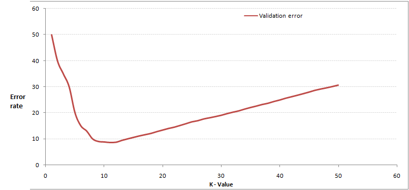
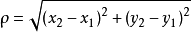
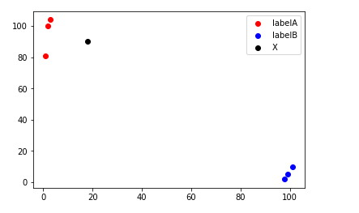
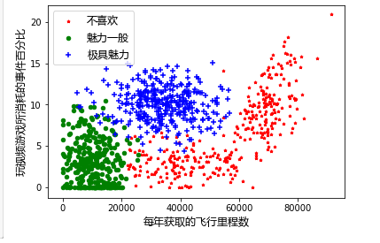

k-nearest-neighbor
文章目录
一、KNN概述
简单的说，k-近邻算法采用测量不同特征值之间的距离方法进行分类。
- 优点：精度高、对异常值不敏感、无数据输入假定
- 缺点：计算复杂度高、空间复杂度高
- 适用数据范围：数值型和标称型
1.1 工作原理
KNN可以说是最简单的分类算法之一，同时，它也是最常见的分类算法之一，注意KNN算法是有监督学习的分类算法，它看起来和另外一个机器学习算法Kmeans有点像（Kmeans是无监督学习算法）。
其工作原理是使用一个样本数据集合，也称为训练样本集，并且样本集中每个数据都存在标签，即我们知道样本集中每一数据与所属分类的对应关系。输入没有标签的新数据后，将新数据的每个特征与样本集中的数据对应的特征进行比较，然后算法提取样本集中特征最相似（最近邻）的分类标签。一般来说，我们只选择样本集中前k个最相似的数据，这就是KNN中K的出处，最后使用Majority-Voting（多数表决）选择k个最相似数据中次数出现最多的分类，作为新数据的分类。
1.2 三要素
- K的取值：可以使用Cross Validation(交叉验证)来选取合适的值
我们该如何选择合适的k值呢？通过将样本数据按照一定比例，拆分出训练用的数据和验证用的数据，比如6：4拆出训练数据和验证数据，从选取一个较小的k值开始，不断增加k的值，然后计算验证集合的方差，最终找到一个比较合适的k值。
 - 距离度量 Metric / Distance Measure:距离度量一般都使用 Euclidean distance（欧氏距离）
二维空间两个点的欧式距离公式如下
 - 分类决策 Deision rule：分类决策即Majority-Voting ，选取票数最多的标签，在回归中通常为k个最邻近点的标签的平均值
1.3 在什么时候选择KNN算法

二、实践案例（主要重点是可视化）
2.1 实例一 ：电影分类
1 | 电影名称 打斗镜头 接吻镜头 电影类型 |
首先我们通过 Python 的第三方库进行数据可视化处理
1 | import matplotlib.pyplot as plt |

KNN近邻算法最核心的部分就是欧式距离的计算，通过计算得到距离最近的k个数的标签，统计出现次数最多的标签，将其赋值给新数据。下面这段代码就是KNN算法最基本的实例。通过传入数据来预测电影的标签是什么！
1 | from numpy import * |
2.2 实例二：优化约会匹配效果
1-项目概论
海伦使用约会网站寻求约会对象，经过一段实践之后，她发现曾交往过三类人：
- 不喜欢的人
- 魅力一般的人
- 极具魅力的人
她希望：
- 工作日与魅力一般的人约会
- 周末与极具魅力的人约会
- 不喜欢的人则直接排除掉
现在她收集到了一些约会网站未曾记录的数据信息，这更有助于匹配对象的归类。
2-开发流程
1 | 1. 收集数据：提供文本文件 |
测试样本与非测试样本的区别在于：
测试样本是以及完成分类的数据，如果测试分类与实际类不同，则标记为一个错误
3-收集数据：提供文本
海伦把这些约会对象的数据存放在文本文件 datingTestSet2.txt 中，总共有1000行，海伦约会的对象主要包含以下3种特征：
- 每年获得的飞行常客里程数
- 玩视频游戏所耗费时间百分比
- 每周消费的冰激凌公升数
文本文件数据格式如下
1 | 40920 8.326976 0.953952 3 |
4-准备数据：使用python解析文本
将文本记录转换为 NUmPy的解析程序
1 | from numpy import zeros |
5-分析数据：使用Matplotlib画二维散点图
下面的代码里面有三分可视化的结果，但是我们可以在 Notebook中很明显的看到每年获取的飞行里程数和玩视频游戏所消耗的时间百分比所构成的坐标图非常的清晰的分成三个部分，这就为我们后续的计算距离分类奠定基础。
1 | from numpy import zeros |

6-归一化数值
归一化数据是一个让权重变为统一的过程，比如你要买进10吨铁矿，用的人民币和美元肯定不同，那么这10吨铁矿的价值到底是多少，就需要一个统一的标准来衡量，全世界那么多国家，都要用自己国家的货币去买，到底该付多少就很迷茫。这时，规定用美元统一结算，各国按照本国货币对比美元的汇率，再加上10吨铁矿的美元价值，就可以算出自己应付多少本国货币。
1 | 序号 玩视频游戏所耗时间百分比 每年获得的飞行常客里程数 每周消耗的冰激凌公升数 样本分类 |
表2-2给出了提取的四组数据，如果想要计算样本3和样本4之间的距离，可以使用下面的方法：
√((0−67)^2+(20 000 −32 000)^2+(1.1 −0.1)^2 )
我们很容易发现，上面方程中数字差值最大的数学对计算结果的影响最大，也就是说，每年获取的飞行常客里程数对于计算结果的影响远远大于表2-
在处理这种不同取值范围的特征值时，我们通常采用的方法是将数值归一化，如将取值范围处理为0到1或-1到1之间。下面的公式可以将任意取值范围的特征值转换为0到1区间内的值：newValue = (oldValue - min ) / (max - min)
其中 min 和 max 分别是数据集中的最小特征值和最大特征值。虽然改变数值取值范围增加了分类器的复杂度，但为了得到准确结果，我们必须这样子做。我们需要在文件中增加一个新的函数 autoNorm()，该函数可以自动将数字特征值转换为0到1的区间。
2中其他两个特征——玩视频游戏和每周消费冰激凌公升数——的影响。而产生这种现象的唯一远远，仅仅是因为飞行常客里程数远大于其他特征值。但海伦认为这三种特征是同等重要的，因此作为三个等权重的特征之一，飞行常客里程数并不应该如此严重的影响到计算结果。
1 | from numpy import zeros |
7-训练算法
这个是核心内容，即计算各个标记点之间的距离并返回k个标记点内出现次数最多的标签。
1 | 对于每一个在数据集中的数据点： |
整个训练算法和之前的电影分类的算法是一致的，该算法进化的部分即对数据进行了归一化处理，导致我们传入进去的数据也需要进行归一化处理。
1 | # 训练算法 |
8-测试分类错误所占百分比
该函数的代码是统计该KNN算法的实现效果，抽取一部分的数据作为数据集，进行测试然后统计测试错误的百分比
1 | # 测试分类错误，错误分辨个数 |
9-实践算法：调用算法接口进行预测
直接在主函数中使用该函数调用数据预处理函数传入数据、调用归一化数据处理函数归一化数据、调用训练算法传入数据进行预测，最后输出算法判断后的结论。
1 | # 实践算法 |
10-完整代码
1 | from numpy import zeros |